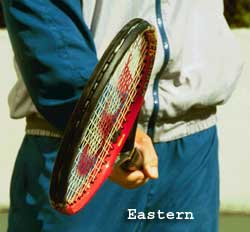
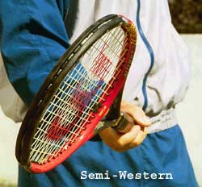
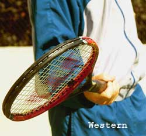
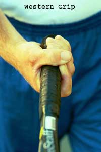
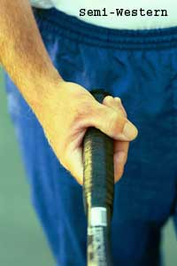
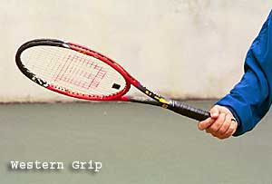
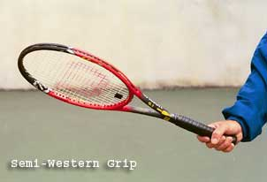
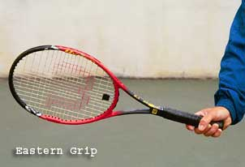

Previous: Understanding The Continental Grip | 🏠 Classic Lessons Home | Next: Weaponize Your One Handed Backhand
Private Lessons: Understanding The Forehand Grips
Comprehensive unified tennis knowledge base — Fundamentals, Stroke Analysis, Reference Library, and more
Private Lessons:Understanding The Forehand Grips
By Kerry Mitchell
Extreme forehand grips make it more difficult to develop the mental image of the hand and racquet face.
In Part 1, we looked at the continental grip, which was once nearly universal, but is under utilized by most players, both at the pro and the club level. Now let's take a look at various forehand grips in modern tennis and the key images associated with mastering them and incorporating them into your game.
As I said in the first article, the most difficult process in understanding grips and grip changes is the visual or mental aspect. Correlation between the position of the hand and the angle of the racquet face has to be created visually in the mind's eye for each grip position.
This is very difficult when transitioning between two extreme positions because visually/mentally they are so different. One of the best reasons the past generations played with just one grip was the ease of transition between different shots.
With the rise of semi-western and western grips, developing images to make these transitions is one of the biggest challenges faced by most club players.
Since the grip changes are so great, today's players have to practice a lot with each grip position to acquire clear visual and mental images.
The other mental process to understand about grips is that the image and the reality of the contact position don't always correlate perfectly. Some coaches call this over-compensation. It means the image the player develops is more extreme than the reality of the motion. This exaggerated image or over-compensation is used to correct, or to hold in check, natural tendencies most players have in their swings.
This is true for the topspin forehand regardless of the grip, but especially for the numerous players who have gone "western." The reality is for all the grips, the racquet face is perpendicular with the court at contact, or very close to perpendicular, as it brushes up through the ball from low to high. (Although some of the Advanced Tennis high speed footage shows that on high balls pro players actually are closing the racquet face slightly. Click here for more info.)



The mental image of the racquet face closed for topspin as it approaches the ball. Note: The face is slightly more closed for the extreme grips.
However, to create topspin with the modern forehand grips, the mental image should be of the racquet head approaching the ball with a closed face. This is true for all three major grips, however, for the Western and Semi-Western, the angle will be slightly more closed than for the Eastern.
As players swing through the forehand, there is a natural tendency to open the palm so the face of the racquet points skyward. This causes a loss of ball control and makes it extremely difficult to hit consistent topspin. This natural body reaction has to be controlled through the image of the closed face.
The faster the swing speed and/or the more vertical the swing trajectory, the quicker the palm of the hand/racquet face wants to open. For this reason, the more Western your grip, the more important the image of the closed face becomes.
At the highest levels of the game, the kind of imaging required can be quite extreme due in great part to the speed of the balls and the speed of the swing required to return them. As you watch matches on television, you will often see a player, after missing a ball long, do a practice swing, either with their hand or with the racquet, emphasizing the closed position of the racquet face (or palm) in the contact zone.


The Western grip so common in junior tennis with the hand mostly underneath the handle.
The less extreme or Semi-Western. Part of the hand is behind and part is underneath.
Mental imaging is often difficult for the club player to control because natural swing patterns (free and relaxed), good preparation, and footwork are difficult to achieve.
The other factor that compounds the difficulty for club players is the added ball speed created by the modern racquets which causes them to tighten up and panic, resulting in an abbreviated swing with an open racquet face. For this reason, the closed face image is a common key across all the forehands.
Now let's look at the grips individually, discuss some of the pluses and minuses, and note some other images associated with each one.
The Western Grip
Actually, there are two forms of the western forehand grip: the Extreme Western and the Semi-Western. These grips have become very popular over the last 15 years among players as well as instructors.

Visualizing the racquet head above the wrist corrects the common problem of incorrect positioning at contact.
Both western grips allow a player to hit more topspin, which in turn allows him/her to hit the ball harder and higher over the net. One of the problems with any western grip is it requires what I call a "swing away mode". The more fully you swing the better the result.
Without a full swing the racquet head at contact trails too far behind and/or below the hand. This causes the face of the racquet to open too dramatically producing an error. It also causes the swing to be too wristy. The arm and hand stop, but the racquet head keeps going, causing a loss of racquet head control.
The image I use to correct this is the image of the racquet head above the wrist at contact. In general, this is another over-compensation, although, again, on some balls, we can actually see pro players in this position.
Even though the extreme western grip is extremely common, in my opinion this is the worst possible forehand grip position if you want to play a complete game. The transition from an extreme western to a continental grip required for the volley and the serve (moving between the two most extreme possible grips) is very difficult and often not achieved very successfully.
The western is a “swing away” grip, which causes problems below the highest levels.
With the extreme western grip, the swing pattern is extremely vertical. This is necessary to get the racquet face into the proper position at contact. It is almost impossible to hit a completely flat ball with this grip position and the extra swing speed required for this grip position creates a greater potential for error.
The swing pattern also has an extreme inside out shape. This pattern is essential to produce quality topspin. If the inside out pattern is not correct, the player can actually come across and under the ball, creating underspin and right to left side spin. This causes the ball to fly and also to fade to the right.
The extreme western also requires open stance foot positioning to allow for a complete swing. This is because the contact point is further back in the stance (nearer the back foot) than other grip positions, making trunk rotation impossible with a closed stance. Open stance positions make hitting the ball "late" in the stance possible for every grip position. This is one of the major reasons why open stance hitting is so popular today.

When the racquet head and hand are either too late or late, this image of the racquet head above the wrist corrects the problem.
The Semi-Western Grip
The semi-western forehand grip is very similar in a lot of respects to the extreme western, but has definite advantages over the extreme western. With the hand in a less extreme position getting the racquet head through the ball is much easier and makes for a less wristy shot.
Still, even with the semi-western, players often have the same problem getting the racquet head to the contact. Again, the tendency is that the racquet head trails behind the hand and has to be raised with the rotation of the forearm and wrist to meet the ball at the proper angle, producing errors both into the net and out of the court.
With his Semi-Western grip, Agassi can hit flatter and penetrate the court.
Unlike the extreme western, the semi-western forehand swing pattern can have a more horizontal plane producing a flatter, more penetrating ball which is essential to playing an all court game. Transitioning from the semi-western grip position to a continental grip position is much easier (at least compared to an extreme western grip position).
The semi-western is the most flexible grip position of the two western grips in terms of stance positioning as well. It is easy to flow between open and closed stance hitting. This is another essential element in being a more rounded player who uses their good ground strokes to get to the net.
Both western grip positions are most successful on slower, high bouncing surfaces where there is more time to set up for the shot and complete the lengthy swing pattern. It is very difficult to "push" with either western grip. So, if you are prone to half swinging or poking the ball in match situations then these grip positions are not for you.
The Eastern Forehand

The modern Eastern grip puts most of the hand behind the handle.
The eastern forehand grip is the most versatile of all the forehand grips, due in large part to the fact that a player can hit either a flat or topspin shot; with an open or a closed stance.
A closed, or what I call a neutral stance, is preferable to open stance positioning with the eastern grip because of timing problems when the ball is either high or too far back in the hitting zone. This makes being able to hit on the rise essential.
Swing speed, swing length, and the swing path (the angle at which the racquet travels through the hitting zone) can vary considerably with this grip, again making it more versatile than either western grip. Unlike a western grip (a "swing away" grip position), the eastern grip allows for a variety of swing speeds (slow or fast).
The swing length can be very compact or very loopy. Obviously, loopy swings, just like western grips, make hitting on the rise more difficult. The swing path with the eastern forehand is more horizontal in nature but can be easily adapted to create topspin with a slightly more vertical swing path when needed.
With the Eastern grip, learning to hit on the rise is a necessity.
At the higher levels of the game there is much more of a need to adjust all of these aspects to be successful. The eastern forehand grip definitely accommodates the ability to adapt the stroke when needed in match play.
Transitioning from the eastern forehand grip to the continental grip is the easiest of all the grip transitions. One reason is the hand has to move only slightly on the racquet. The second reason is mental. Since the grips are very similar, the mental and visual understanding of how the hand and racquet face correlate are easier to understand than either western grip.
As the speed of the game has quickened over the last few years, the player of today has become faster and more fit creating a need for a more varied game--a player who can do it all. If you want to be that kind of player, then learning the necessary grips should be your highest priority. Being able to transition between grips is difficult, but necessary to reach one's potential.
Next, we'll look at the transitions and images for the backhand grips, for both the one-handed and two-handed player.

Kerry Mitchell was a leading Bay Area teaching pro for 20 years. He developed numerous ranked junior players and coached a series of championship high school teams. He was highly ranked both sectionally and nationally in men's 30 and 35 singles.
After 15 years as the Head Teaching Pro at the John Yandell Tennis School in San Francisco, California Kerry and his partner are now splitting time between homes in Merida, Mexico and Toronto, Canada. He has continued to coach and to have great competitive success winning Canadian National seniors titles—not to mention continuing to write articles for Tennisplayer from his unique perspective.
Source: tennisplayer.net archive — Understanding The Forehand Grips.docx (John Yandell teaching library, 2002-2022). Extracted and rendered as HTML for Tennis Future Lab.